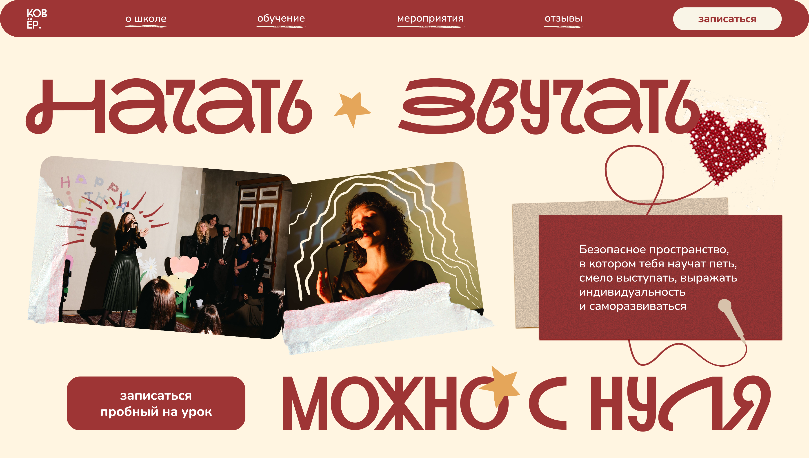
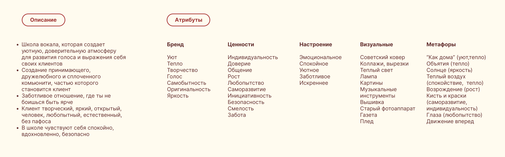
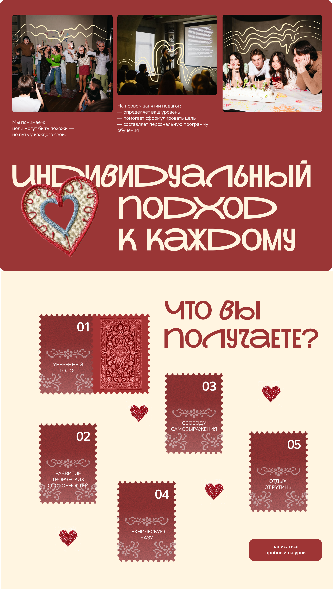
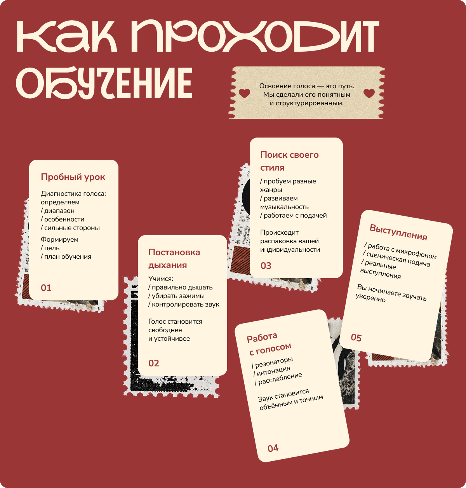
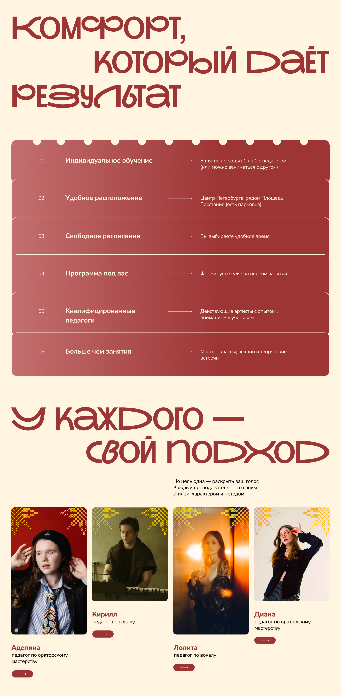
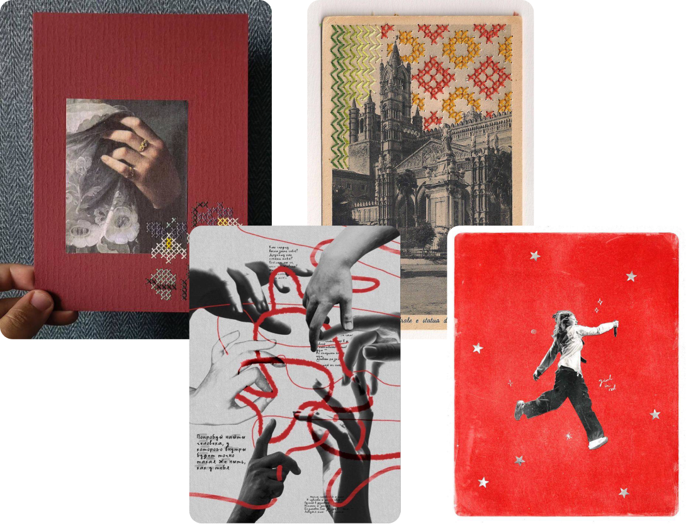
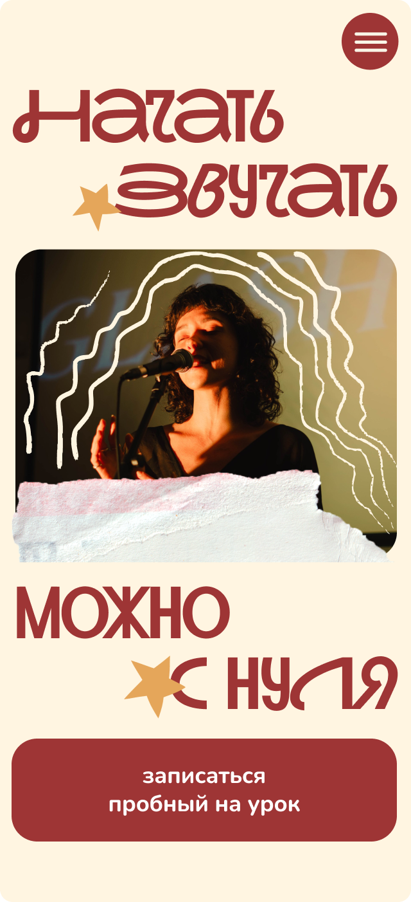
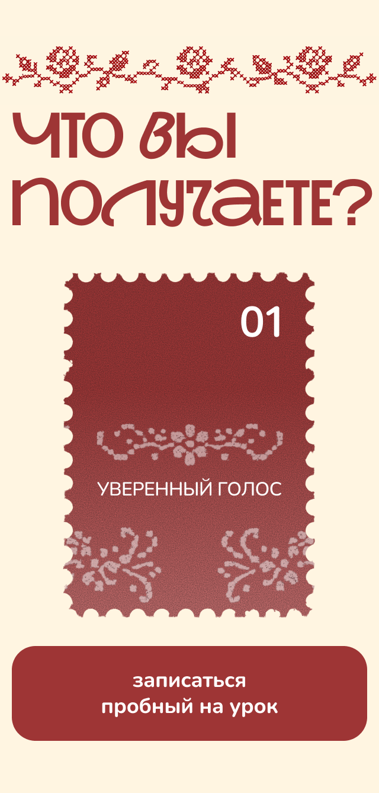
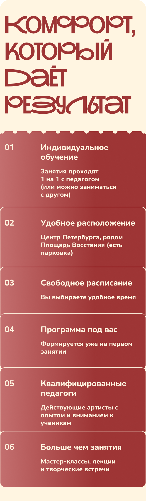
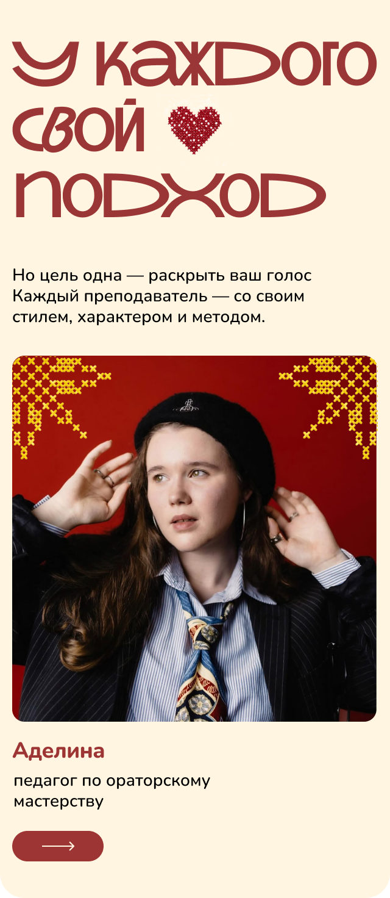

Сформировать доверие у потенциальных клиентов
Разработка дизайн-концепции сайта для школы голоса
КОВЁР — школа вокала и ораторского мастерства.
Название связывает уют, тепло и лёгкую ассоциативность в одном слове,
а также созвучно со словом cover — каверы, которые записывают ученики.
01 — О проекте
О проекте
Их особенность — проявление индивидуального подхода к каждому ученику. Людям нравится чувствовать себя частью творческого коммьюнити. Плюс к тому регулярно проводятся интересные квартирники и другие мероприятия, на которых все учащиеся могут показать свои таланты.

02 — Задачи
Задачи
Рассказать о бренде
Привести к целевому действию — записаться на пробный урок
От клиента
«Чтобы человек, заходя на сайт, испытывал те же эмоции, которые он испытывает, заходя к нам в школу».
03 — Образ проекта
Образ проекта
После анализа целевой аудитории бренда и сайтов конкурентов мы составили образ проекта.

Описание
- Школа вокала, которая создаёт уютную, доверительную атмосферу для развития голоса и выражения себя своих клиентов.
- Создание принимающего, дружелюбного и сплочённого комьюнити, частью которого становится клиент.
- Заботливое отношение, где ты не боишься быть ярче.
- Клиент творческий, яркий, открытый, любопытный, естественный, без пафоса.
- В школе чувствуют себя спокойно, вдохновлённо, безопасно.



05 — Визуальный анализ
Визуальный анализ
На основе образа проекта собрали мудборд, который соответствует настроению бренда — атмосфере уюта, тепла, ощущения «как дома».

Шрифт для заголовка яркий и декоративный, а для основного выбрали более мягкую форму.
Графика бренда ярко выражается в коллажных приёмах, элементах вышивки и текстурности, оправдывая своё название.
06 — Результат
Результат
Сайт школы голоса КОВЁР
Готовая дизайн-концепция, перенесённая в действующий сайт: атмосфера уюта, тёплая типографика и коллажная графика, ведущие к записи на пробный урок.
06 — Результат
Макеты (мобилка)



